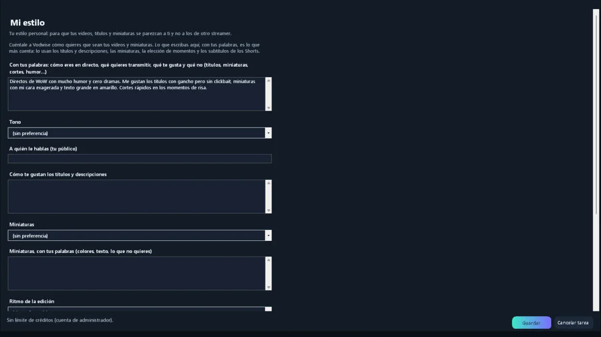
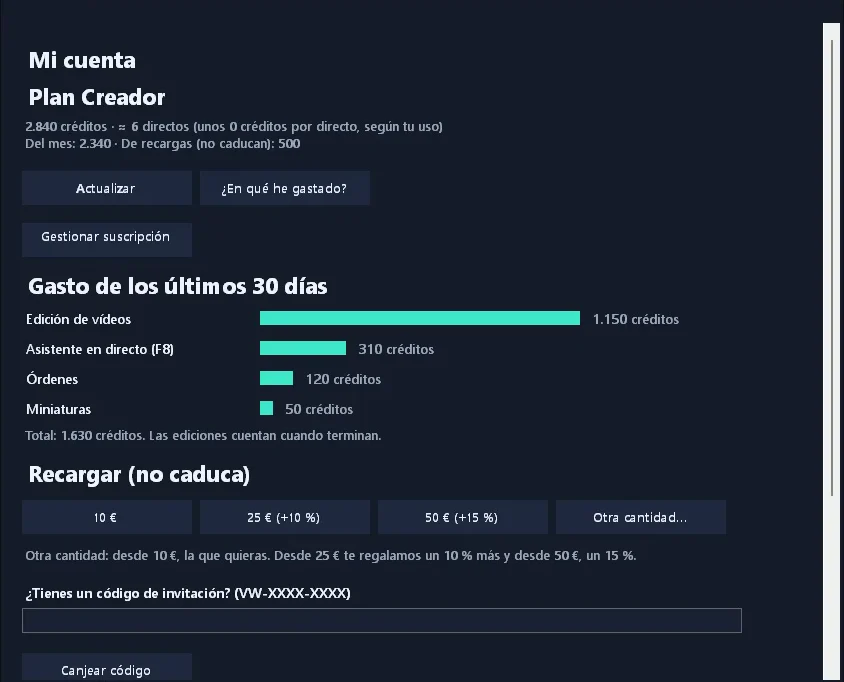
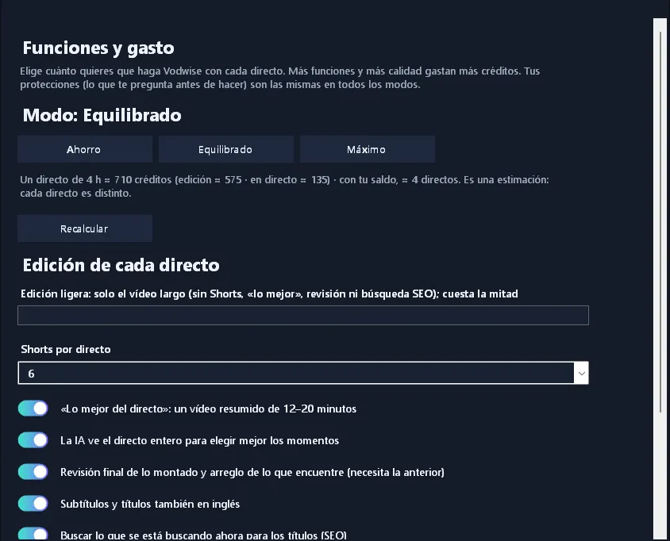
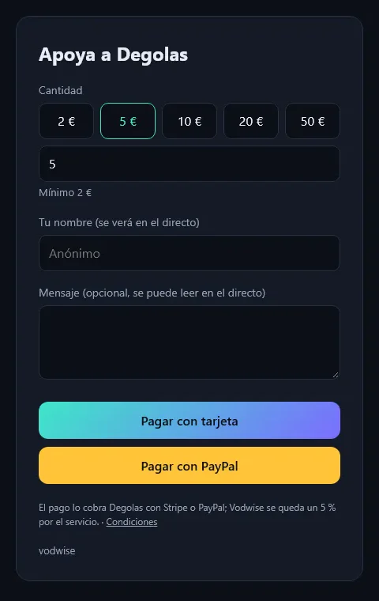

Funciones
Todo lo que necesita un directo: chat multistream, bot, alertas y edición automática
Vodwise reúne en una sola app de Windows lo que un streamer usa antes, durante y después del directo: un copiloto que habla contigo, el chat y el bot de Twitch, Kick y YouTube, las alertas y escenas de OBS, y la edición del directo en tu propio PC. Lo que antes hacían cinco programas y una noche de edición.
Directo
Tu copiloto durante el directo
Hablas con Vodwise como con una persona: «¿qué título tengo?», «cambia a la escena de charla», «pon la categoría en Minecraft». Prepara el cambio, te lo enseña por plataforma y lo aplica cuando dices «sí». Al lado, tus plataformas con título, categoría y espectadores, la actividad del directo y lo que hace la moderación.
Directo
Primeros pasos
La primera vez, la asistente te guía hablando o por escrito: tu nombre, tu cuenta, lo que hay que preparar, tus plataformas, OBS y tu estilo. Puedes dejarlo a medias y seguir otro día.
Directo
Voz en directo (F8)
Si quieres, la asistente escucha el directo y solo entra cuando le hablas, la nombras o el chat lo merece. Su voz va al stream, con un modo económico o uno más natural.
Directo
Hablar con la asistente (F9)
Pulsa una tecla, habla y suelta, como un walkie-talkie: pregunta, pide un cambio de escena o de título, o que busque algo. Te responde en la app y, si quieres, en voz alta.
Directo
Resumen y estado del directo
«¿Cómo va el directo?» te da un diario de lo que ha pasado: raids, subs, momentos, audiencia. Tus viewers pueden pedirlo en el chat. Y una página de Estado te dice qué está conectado y qué no.
Chat
Chat unificado
Twitch, Kick y YouTube en una sola ventana, con emoticonos, insignias, destacados y la moderación a un clic desde el nombre.
Chat
Bot multistream
Comandos, temporizadores, agradecimientos por tipo, puntos y niveles y filtros de spam. El mismo bot en las tres plataformas, con interruptores y esperas para cada comando.
Chat
Voces del chat
Los mensajes del chat se leen en el directo, cada viewer con su voz fija. Velocidad y voces a tu gusto; el filtro de moderación pasa antes.
Chat
Acciones
Recompensas de puntos, comandos con coste, bits y KICKs que disparan sonidos, imágenes y vídeos en OBS. Importa las que ya tienes o crea nuevas.
Chat
Discord
Vodwise avisa en tu servidor como una persona: cuando empiezas, de los momentos buenos (raids, regalos, trenes de hype) y al terminar. Y conversa con tu comunidad en los canales que elijas.
Pantalla y OBS
Alertas
Follows, subs, regalos, bits, raids y canjes con alertas por plataforma y por tipo, igualadas de volumen. Usa las tuyas o pide a la IA un juego completo con tu logo.
Pantalla y OBS
Overlays a tu medida
Un editor de capas para tus overlays: textos, formas, imágenes, último follow, metas, chat en pantalla y espectadores. O describes lo que quieres y la IA te lo monta.
Pantalla y OBS
Escenas y diseño
Colecciones de escenas completas (inicio, charla, juego, pausa, final) con una transición propia y tu logo como emblema, diseñadas por la IA a partir de tu estilo, y los créditos finales a juego.
Pantalla y OBS
Montar OBS
Analiza tu PC y tu conexión, propone la calidad adecuada, monta escenas, perfiles y claves de emisión, instala lo que falta y revisa tu OBS. Lo tuyo no se toca: todo va en un perfil nuevo.
Pantalla y OBS
Créditos finales
Al terminar, unos créditos con todos los que pasaron por el chat, las subs, raids y donaciones. Elige un diseño ya hecho, cámbialo a tu gusto o pide uno nuevo a la IA.
Pantalla y OBS
Avatar VTuber
En vez de tu cámara, un avatar 2D (tus imágenes o uno creado con IA) o 3D (sube tu modelo o créalo con IA desde una descripción o una foto). Habla con tu micro y sigue tu cara.
Pantalla y OBS
Stream Deck
Un perfil para tu Stream Deck con tus escenas de OBS, la música, las teclas de la asistente y las acciones de Twitch, ordenado por la IA. Se importa con un doble clic.
Edición
Vídeo completo y lo mejor
Al terminar el directo, Vodwise lo revisa entero, recorta silencios, elige los momentos y monta el vídeo completo con capítulos y subtítulos, y «lo mejor del directo» de 8–13 minutos. Lo revisas en la app, vídeo a vídeo.
Edición
Shorts con subtítulos
4–6 clips verticales por directo, con tu cámara seguida, un titular y subtítulos. Con calendario de publicación (uno al día) y la opción de pedir otro momento.
Edición
Títulos, descripción y miniatura
Títulos con gancho y descripción pensados para lo que se busca ahora, etiquetas, capítulos y varias miniaturas con tu cara real para probar cuál funciona mejor.
Edición
Publicar en un clic
Cuando apruebas la edición, una página con todo listo para copiar (títulos, descripciones, textos de Shorts, TikTok e Instagram), la carpeta de los archivos y acceso directo a YouTube Studio, TikTok Studio e Instagram.

Edición
Mi estilo
Cuéntale a Vodwise cómo quieres tus títulos, miniaturas, ritmo de edición y subtítulos, con tus palabras. Lo usa en cada edición: dos streamers no reciben nunca lo mismo.

Tu cuenta
Créditos por uso real
Pagas lo que usas: cada función apunta su coste y lo ves por categorías. Planes con créditos incluidos y recargas que no caducan.

Tu cuenta
Funciones y gasto
Elige cuánto quieres que haga Vodwise con cada directo (ahorro, equilibrado o máximo) o activa cada función por separado, con una estimación de lo que gastará.

Tu cuenta
Donaciones propias
Tu página de donaciones con tu nombre, cobradas en tu propia cuenta de Stripe o PayPal. Nombre y mensaje salen en el directo.
Tu cuenta
Estadísticas
Espectadores, follows, subs y eventos por directo y por plataforma, en la app.
Tu cuenta
Tu PC, tus datos
La grabación no sale de tu ordenador; las autorizaciones se guardan cifradas y las retiras cuando quieras; nada se publica sin tu aprobación.
Tu cuenta
Instalación sin complicaciones
Un instalador para Windows. Lo que hace falta para editar se descarga una sola vez, con comprobación de cada archivo, y las actualizaciones llegan solas.
Guías: clips automáticos de Twitch · clips de Twitch para TikTok · directo de horizontal a vertical · emitir en Twitch, Kick y YouTube a la vez · chat unificado de Twitch, Kick y YouTube · grabar en OBS por pistas · crecer en Twitch · crecer en Kick